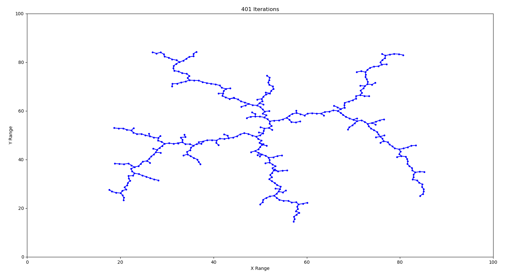
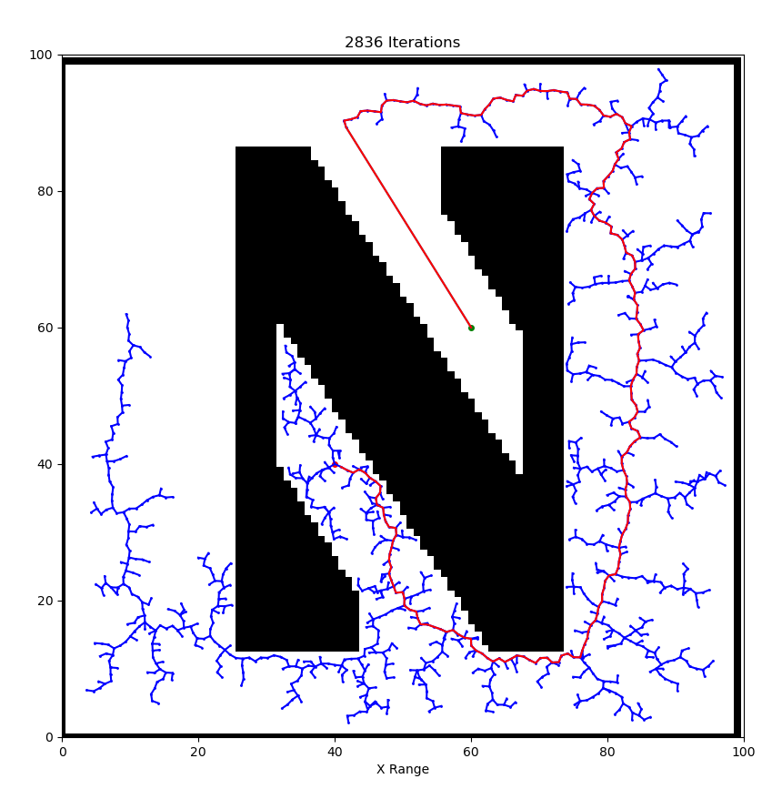

A Rapidly-Exploring Random Tree (RRT) is a fundamental path planning algorithm in robotics. Path planning is the task of moving a robot from one location to another while avoiding obstacles and satisfying constraints. An RRT consists of a set of vertices, which represent configurations in some domain D, and edges, which connect two vertices. The algorithm randomly builds a tree in such a way that, as the number of vertices n increases to ∞, the vertices are uniformly distributed across the domain D⊂Rn.
Implement an RRT in a two-dimensional domain, D=[0,100]×[0,100]. Use an initial configuration of qinit=(50,50) and Δ=1. Plot the result for a few different values of K.
Compared to task 1, there are three modifications to make:
Now let's consider arbitrary objects, represented by black pixels in a binary image. Load a binary image into the script, randomly choose starting and goal locations, and plan a path.
